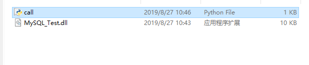

在python调用c#dll库时要先安装库clr，即安装pythonnet，参考文章：https://www.cnblogs.com/kevin-Y/p/10235125.html（为在python中使用dotnet程序安装clr）
但是输入命令后遇到错误“'pip' 不是内部或外部命令，也不是可运行的程序”，解决办法：https://blog.csdn.net/miss85246/article/details/81069276，将python路径下的Scripts文件夹添加到环境变量中去，解决了这个问题。
然后再参照前面一篇文章安装完成pythonnet。
下面实现python调用c#dll文件：
1.c#生成dll文件有两种方法：1）直接新建项目，选择类库生成dll库 2）在已完成的项目中选择属性->应用程序->输出类型->类库。（采用第二种）
2.使用python调用：将生成的DLL文件拷贝到与python同一目录下

编辑python代码
运行后得出结果
附：
python调用dll库里的类和函数必须是public，否则出现错误：“类名没有被定义”，“类没有该对象”。